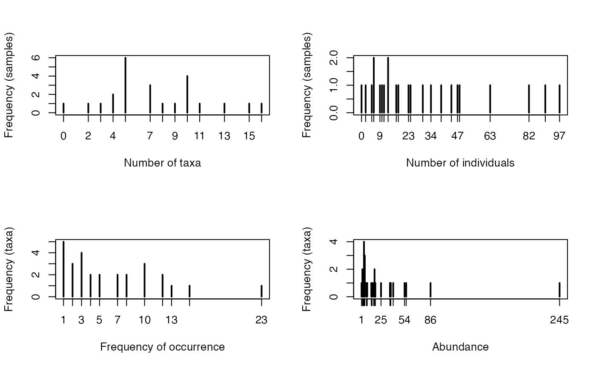
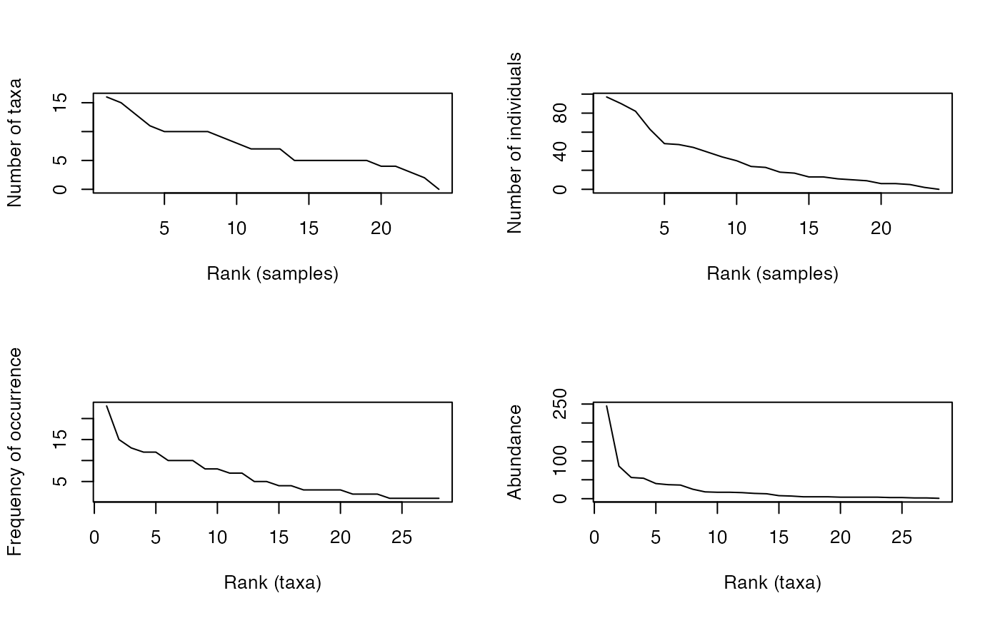
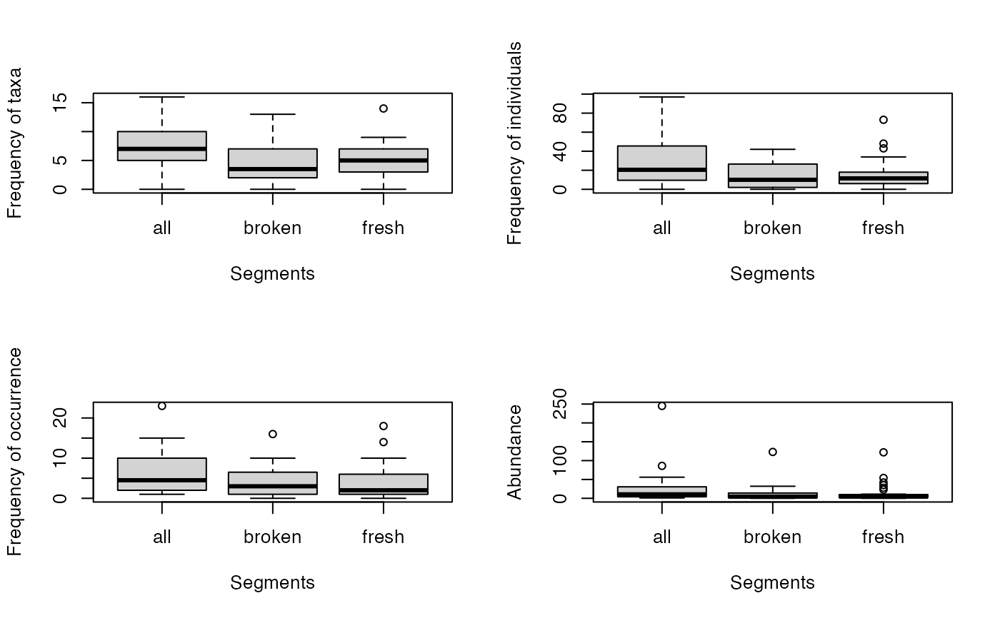
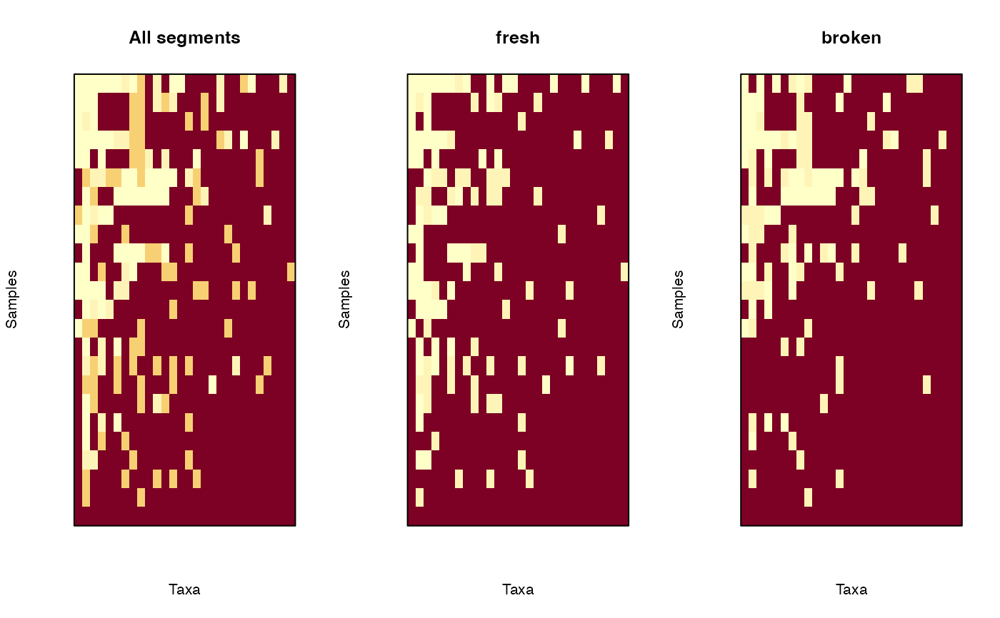
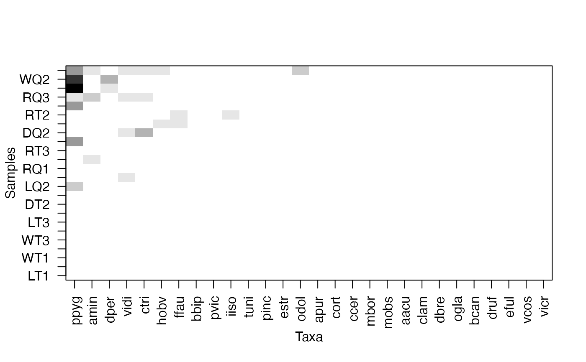
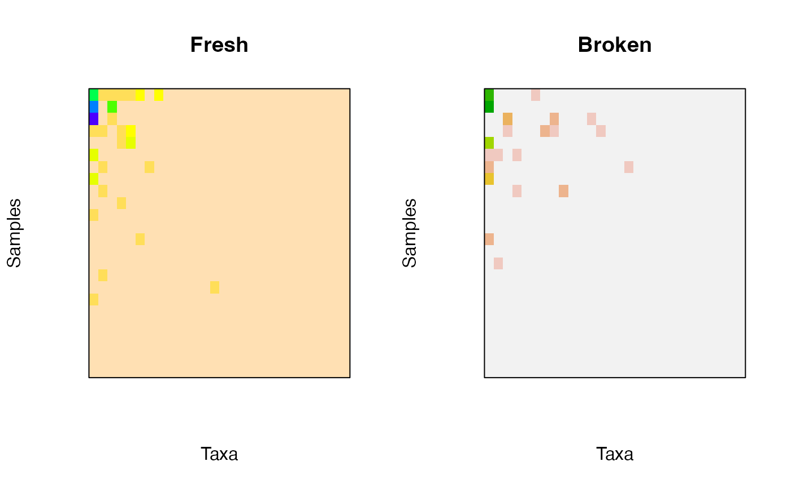

Plotting Methods for Object of Class 'mefa' and 'stcs'
plot.mefa.RdVarious methods for plotting objects of class 'mefa'.
Usage
# S3 method for class 'mefa'
plot(x, stat = 1:4, type = c("hist", "rank"),
trafo = c("none", "log", "ratio"), show = TRUE, ylab, xlab, ...)
# S3 method for class 'mefa'
boxplot(x, stat = 1:4, all = TRUE, show = TRUE, ylab, xlab, ...)
# S3 method for class 'mefa'
image(x, segm=NULL, trafo=c("none", "log", "bins", "prab"),
probs = seq(0, 1, 0.05), ordering = TRUE, reverse = TRUE, names = FALSE,
show = TRUE, ylab, xlab, ...)
# S3 method for class 'stcs'
plot(x, stat = 1:4, type = c("hist", "rank"),
trafo = c("none", "log", "ratio"), show = TRUE, ylab, xlab, ...)
# S3 method for class 'stcs'
boxplot(x, stat = 1:4, all = TRUE, show = TRUE, ylab, xlab, ...)
# S3 method for class 'stcs'
image(x, segm=NULL, trafo=c("none", "log", "bins", "prab"),
probs = seq(0, 1, 0.05), ordering = TRUE, reverse = TRUE, names = FALSE,
show = TRUE, ylab, xlab, ...)Arguments
- x
an object of class 'mefa' or 'stcs'.
- stat
numeric, to determine which characteristic to plot.
1: number of species in samples (default),2: total number of individuals in samples,3: number of occurrences per taxa,4number of individuals per taxa.- type
character,
"hist"produces barchart for discrete values and histogram for continuous values (default),"rank"ranked curves based on the characteristic defined bystat.- trafo
character, transformation of the plotted variable.
"none": no transformation (default),"log": logarithmic transformation (base 10),"ratio": normalizes values by the maximum and rescales to the [0, 1] interval (useful for plotting multiple rank abundance curves),"bins": recodes the values according to quantiles based onprobs,"prab": presence absence transformation of count data.- all
logical, if
TRUEvalues ofstatis plotted for all segments too on the boxplot.- ylab, xlab
character to overwrite default label for the y and x axes. If
NULL, than default labels are returned on the plot.- segm
if
NULLthex$xtabmatrix is used for plotting. Otherways, this defines the segment (one element inx$segm) for plotting (can be numeric or character with the name of the segment).- probs
numeric vector of probabilities with values in [0, 1] (passed internally to
qvector).- ordering
logical, if
TRUE(default) the samples-by-taxa matrix is ordered by row and columns sums, ifFALSErow and columns are not rearranged.- reverse
logical, if the values to plot should be reversed (
TRUE, default, original zero values are lightly, while higher values are strongly coloured) or not (FALSE). This is related tocolargument of the generic functionimage. Currently,heat.colorsis the default color scheme.- names
logical, it labels samples and taxa in the plot using names in
x. If it is a logical vector of length 2, sample and taxa names are returned accordingly.- show
logical, produce a plot (
TRUE) or not (FALSE).FALSEcan be useful, if the returned plotted values are reused (e.g. the matrix returned invisiblyimagecan be used byfilled.contour, or multiple values are used in one plot).- ...
further arguments to pass to plotting functions. See especially
zlimandcolarguments of the generic functionimage, and arguments for the generic functionboxplot.
Details
plot returns barchart/histogram, or ranked curve of summary statistics (number of species, individuals in samples, number of occurrences or abundance of taxa) based on the x$xtab matrix of the 'mefa' objects. These values are basically returned by summary.mefa.
boxplot returns box-and-whiskers plots for the summary statistics based on matrices for each segments in x$segm.
image creates a grid of colored rectangles with colors corresponding to the values in the segment defined by the argument segm. If ordering = TRUE, the ordering of the segment will be based on the x$xtab matrix and not on the matrix for the segment itself. This is due to better comparison among segments.
All graphical display methods for objects of class 'stcs' are based on the conversion of the object into 'mefa', and than the respective plotting method is applied. The conversion is made based on the default mefa settings (e.g. with segments). If more control is needed over the object structure, use the mefa function to coerce to a more appropriate class for this.
Value
All methods produce a plot if show = TRUE, and return the plotted values invisibly, or visibly if show = FALSE.
References
S\'olymos P. (2008) mefa: an R package for handling and reporting count data. Community Ecology 9, 125–127.
S\'olymos P. (2009) Processing ecological data in R with the mefa package. Journal of Statistical Software 29(8), 1–28. doi:10.18637/jss.v029.i08
Author
P\'eter S\'olymos, solymos@ualberta.ca
Examples
data(dol.count, dol.samp, dol.taxa)
x <- mefa(stcs(dol.count), dol.samp, dol.taxa)
## Frequency distributions
opar <- par(mfrow=c(2,2))
plot(x, 1)
plot(x, 2)
plot(x, 3)
plot(x, 4)

par(opar)
## Ranked curves
opar <- par(mfrow=c(2,2))
plot(x, 1, type="rank")
plot(x, 2, type="rank")
plot(x, 3, type="rank")
plot(x, 4, type="rank")

par(opar)
## Boxplot for segments
opar <- par(mfrow=c(2,2))
boxplot(x, 1)
boxplot(x, 2)
boxplot(x, 3)
boxplot(x, 4)

par(opar)
## Image (levelplot)
## comparing all and the segments
opar <- par(mfrow=c(1,3))
image(x, trafo = "bins", main = "All segments")
image(x, segm = 1, trafo = "bins", main = dimnames(x)$segm[1])
image(x, segm = 2, trafo = "bins", main = dimnames(x)$segm[2])

par(opar)
## For black and white, with names
image(x, col = grey(seq(0, 1, 0.1)), names = TRUE)

## For nice colors other than default
opar <- par(mfrow=c(1,2))
image(x[,,"fresh"], col = topo.colors(10),
main = "Fresh")
image(x[,,"broken"], col = terrain.colors(10),
main = "Broken")

par(opar)